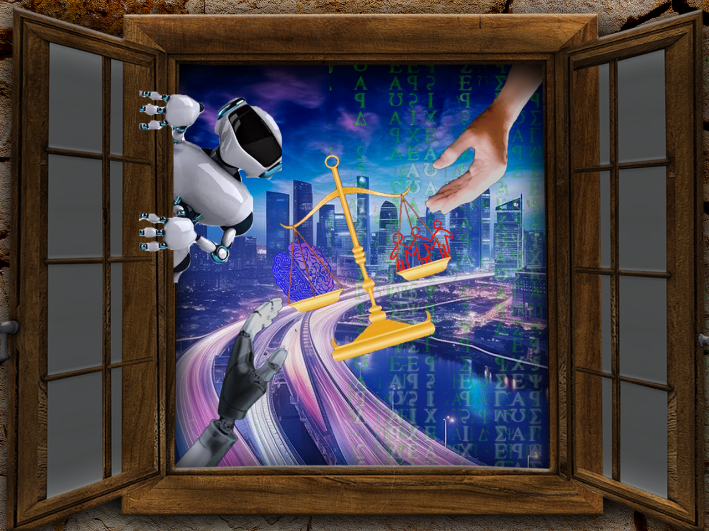

I based this collage on the rising conversations on AI in human society and whether its fair to have negative
outlooks on its use as well as it's evolution. It is in its core a tool to use and how many people today use it
as a substitute rather than a tool is to say the least concerning for human ingenuity and validness in our efforts
as people compared to AI which dominates as a substitute.
I used masking on the hands as they were a two for one deal situation making them into their own layers to postion
them at the corners of the window as if to try to manipulate the scale in the middle to show their worth.